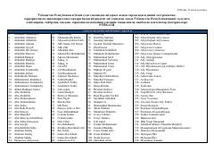

TMO'zbekistonda tarqatilishi taqiqlangan internet materiallari va kanallar ro'yxati.
Ushbu hujjat O'zbekiston Respublikasi Oliy sudi tomonidan ekstremistik va terroristik deb topilgan hamda mamlakat hududida tarqatilishi taqiqlangan internet materiallari, sahifalar va kanallarning rasmiy ro'yxatini o'z ichiga oladi. Unda turli ijtimoiy tarmoqlar va messenjerlardagi taqiqlangan manbalar keltirilgan.